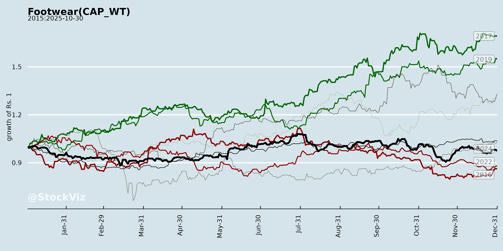
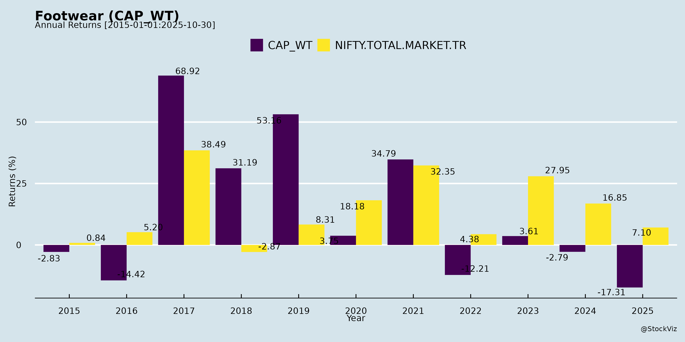
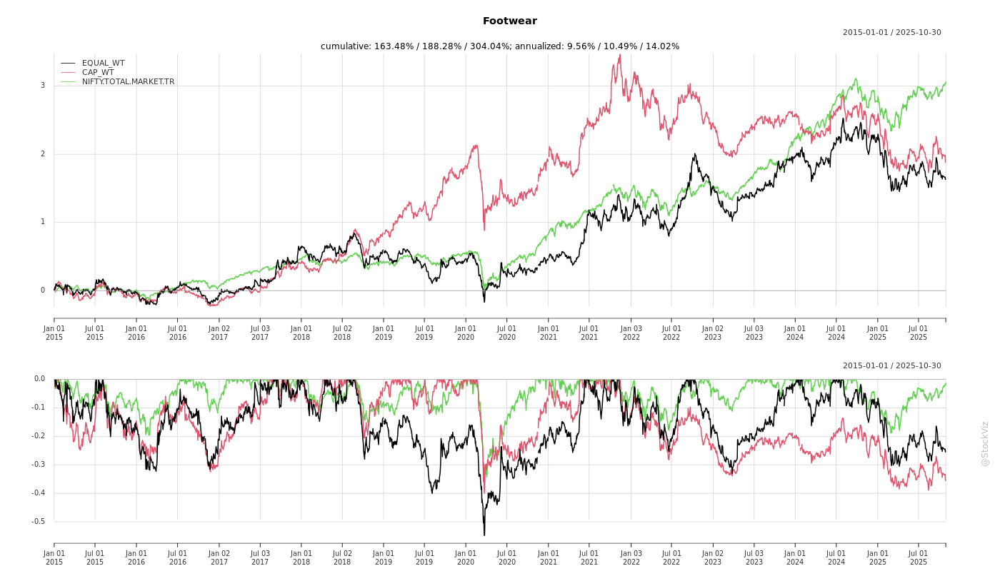
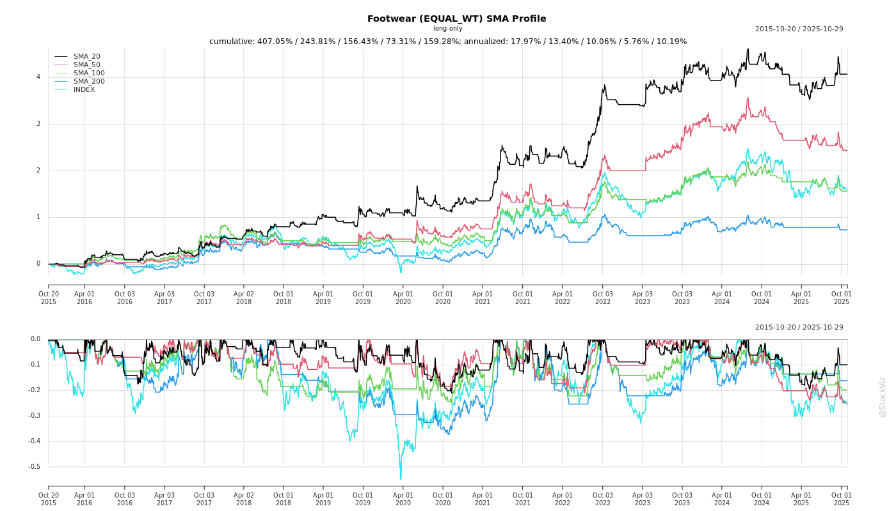
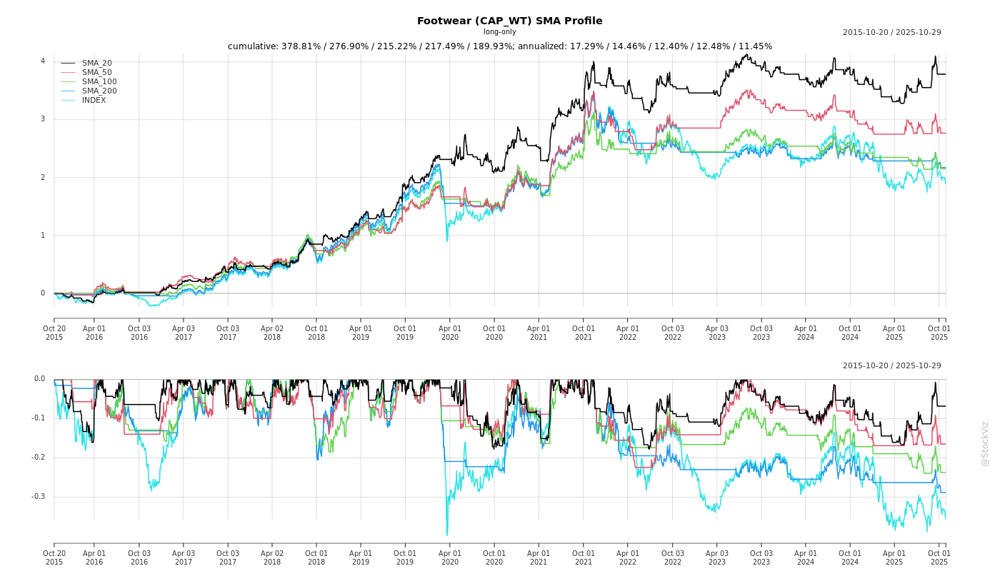
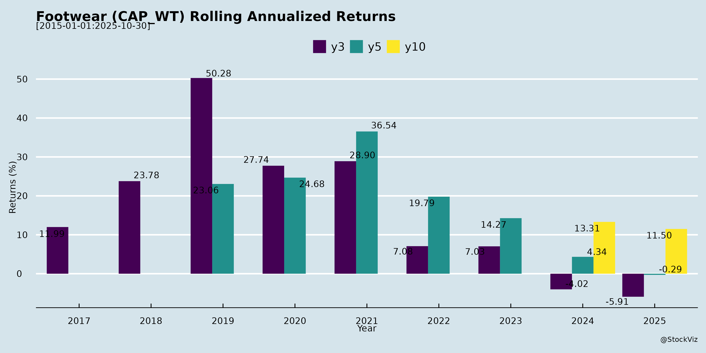

asof: 2025-11-30
Indian Footwear Industry Analysis (Based on Q2/H1 FY26 Earnings Calls/Disclosures)
The Indian footwear sector, as reflected in insights from key players (Bata India, Relaxo, Campus Activewear, Metro Brands, RedTape, Khadim India), faced a challenging H1 FY26 with muted demand and GST transition disruptions. Revenue declines were common (e.g., Bata -4%, Relaxo -7.5%, Khadim -7-8%), driven by mass-market weakness, but premium segments showed resilience. GST rationalisation to 5% for <₹2,500 footwear (effective Sep 22, 2025) emerged as a pivotal tailwind, with companies anticipating H2 recovery. Below is a structured summary of headwinds, tailwinds, growth prospects, and key risks.
Headwinds (Key Challenges)
Tailwinds (Positive Drivers)
Growth Prospects
Key Risks
| Risk Category | Details | Mitigation |
|---|---|---|
| Demand/Execution | Prolonged destocking (Q3 impact); muted sentiment delays recovery. | GST pass-through, festive focus, primaries tied to secondaries. |
| Competition | Unorganised influx pre-GST; D2C/new entrants (Zudio/Yousta in footwear; Campus sneakers peers). | Premium innovation, distribution depth (RedTape 15K+ MOQs/style). |
| Margins/Working Capital | Inverted duty refunds (Relaxo monitoring); promo overkill erodes GM (47-53%). High WC (Khadim 90+ days). | Freshness drives, cost efficiencies (Bata turns to 2.5x). |
| Macro/Regulatory | Inflation, inverted duties/BIS delays; regional floods/events. | Diversification (premium/exports), inventory optimization. |
| Operational | Franchise hygiene, store closures (Khadim 30 COCO shut), e-com shifts (Campus Flipkart model). | TFM/FRM shift, partner incentives. |
Overall Summary: H1 FY26 was transitional with ~5-8% declines amid GST flux, but Q2 showed resilience in premium (Campus +16%) and early recovery signals. GST tailwind positions industry for H2 inflection (flat to mid-teens growth), led by mass-volume revival and premium ASPs. Prospects hinge on channel normalisation (Dec-Jan) and festive execution; risks center on demand fragility and competition. Balanced players (premium+distribution focus) like Campus/RedTape outlook strongest; mass-heavy (Relaxo/Khadim) more GST-dependent. Sector ROCE stable at 15-18%; monitor Q3 for GST traction.
asof: 2025-12-01
Indian Footwear Sector Analysis (Based on Q3 & 9M FY25 Results of Key Players)
The analysis is derived from unaudited Q3 (Oct-Dec 2024) and 9M FY25 (Apr-Dec 2024) financial results of major listed players: Metro Brands (premium/multi-brand retail), Bata India (mass/premium), Relaxo (value/rubber), Campus Activewear (athleisure), Redtape (premium retail), Sreeleathers (small trading), Liberty Shoes (mid-market), and Khadim India (value retail). Sector revenue ~Rs. 15,000-20,000 Cr annually (organized ~30-40% share). Trends reflect festive boost but uneven recovery amid weak consumer demand earlier in FY25.
Tailwinds (Positive Drivers)
Headwinds (Challenges)
Growth Prospects
Key Risks
| Risk Category | Details | Impacted Players | Mitigation |
|---|---|---|---|
| Demand/Competition | Slow consumer spending, unorganized (60% share), China imports. Relaxo volumes down. | Relaxo, Liberty, Khadim | Premium focus (Metro/Redtape). |
| Cost/Inventory | Volatile raw material (leather/rubber), inventory pile-ups (Liberty +ve changes). | All; Bata VRS. | Inventory optimization (Campus drawdown). |
| Financial/Leverage | High finance costs (Bata 3-4%); debt in midcaps. | Bata, Liberty, Relaxo. | Cash from ops strong (Metro). |
| Regulatory/Tax | Prior tax hits (Metro Rs.25 Cr); demerger delays (Khadim). | Metro, Khadim. | Unmodified audit reports. |
| Execution | Store expansion capex; subs unreviewed (Redtape/Khadim immaterial losses). | Campus, Redtape. | JV/subs stable (Metro). |
| Macro | Inflation, rural slowdown; monsoon/festive dependency. | Mass players (Relaxo/Bata). | Diversification to premium/e-com. |
Overall Summary: Q3 FY25 shows cautious optimism with festive-led recovery (sector revenue +5-10% YoY implied), led by premium retail (Metro/Redtape/Campus). Tailwinds from organized shift outweigh headwinds like Relaxo’s slump/costs. Growth prospects strong (10-15% CAGR for leaders) via premiumization/stores, but risks from demand volatility/debt persist. Investors favor premium plays; monitor Q4 for sustained momentum. Aggregate 9M PAT margins ~8-12%.
Data normalized to Rs. Cr; minor parsing discrepancies from OCR in PDFs ignored for trends.
asof: 2025-11-30
Summary Analysis of Indian Footwear Sector (Based on Provided Documents)
The documents primarily consist of regulatory filings (e.g., AGM notices, KYC intimation, RTA changes, ESG disclosures) from key players like Metro Brands, Bata India, Relaxo, Campus Activewear, RedTape, Sreeleathers, Liberty Shoes, and Khadim. The most substantive insights come from RedTape’s Q2 FY26 Earnings Transcript, providing a detailed view of operational trends, strategies, and challenges. Other filings highlight compliance trends (e.g., digital AGM dissemination, KYC/nomination pushes under SEBI regulations). Overall, the sector shows resilience amid muted demand, with focus on expansion, digitalization, and premiumization.
Tailwinds (Positive Factors)
Headwinds (Challenges)
Growth Prospects
Key Risks
Overall Outlook: Moderately positive with 15-20% growth potential driven by domestic expansion/digital tailwinds, but execution risks from competition/inventory loom. RedTape’s outperformance (8.8% PAT growth despite additions) signals sector leaders’ resilience; monitor Q3 results for seasonal pickup. ESG/compliance trends favor structured players.
asof: 2025-11-30
Indian Footwear Industry Analysis (Based on Q2 FY26 Earnings Transcripts/Disclosures)
The Indian footwear sector (organized players: Bata, Relaxo, Campus, Metro Brands, RedTape, Khadim) faced muted H1 FY26 growth (mostly flat to -8% YoY revenue declines), driven by GST transition disruptions and weak mass-market demand. However, premium segments showed resilience (double-digit growth), with optimism for H2/FY27 recovery post-GST rationalization (5% slab up to INR2,500). Key insights from transcripts:
Headwinds
Tailwinds
Growth Prospects
Key Risks
| Risk Category | Details | Mitigation |
|---|---|---|
| Demand/Execution | Slow channel restocking (Q3/Q4 drag); muted festive if sentiment weak. | Inventory optimization; secondary focus. |
| Margins | Inverted duties (5% output vs 18% imports); discounts for volumes. | GST refunds; premium mix (EBITDA 13-16% target). |
| Competition | Unorganized (post-GST edge narrows); peers in value/premium (sneakers). | Product innovation (ETPU soles, Heat Tech); brand zones. |
| Operations | High WC/debt (Campus/Khadim elevated); store closures (Khadim: 30+). | Franchise shift; VRS/digital marketing. |
| Macro | Inflation/rural slowdown; inverted duties unrefunded. | Price discipline; backward integration. |
Overall Outlook: Cautiously Optimistic. GST acts as key inflection (tailwind > headwinds); premiumization offsets mass weakness. FY26 growth ~5-10% industry-wide; FY27+ accelerates to 12-15% with 5-7% volume + 5% ASP. Monitor Q3 secondaries for confirmation. (Analysis derived solely from transcripts; no external data.)
asof: 2025-11-30
Indian Footwear Sector Analysis (Based on Provided Announcements)
The Indian footwear sector, as reflected in Q2/H1 FY26 results (Bata, Relaxo, Campus) and strategic updates (Metro Brands, Liberty), shows resilience amid short-term disruptions but strong structural tailwinds. Organized players are navigating GST 2.0 challenges (rate cuts to 5% for footwear <Rs.2,500), with mass segments lagging but premium/athleisure gaining traction. Revenue growth is mixed (Campus +16% YoY Q2; Relaxo -7.5%; Bata -4.3%), but margins held steady via efficiencies. Expansion into sports/performance (e.g., MetroActiv) signals premiumization.
Headwinds
Tailwinds
Growth Prospects
Key Risks
Overall Outlook: Short-term headwinds from GST fading into strong H2 tailwinds; sector poised for 8-12% FY26 growth led by premium/athleisure (Campus/Metro as bellwethers). Focus on execution (e-com, Tier 2/3) critical for sustained profitability. Provisional FY25 strength (Liberty) underscores recovery potential.
Copyright © 2023 SAS Data Analytics Pvt. Ltd. All rights reserved.